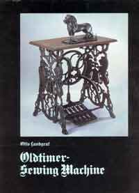

The NeedleBar
REFERENCE BOOK LIST
The most extensive and complete book list for Sewing Machine Collectors anywhere either in print or on the web!
New Additions / Books, Catalogues & Booklets / Collectors' Society Journals
List of Useful Online Library Search Engines
~~~~~~~~~~~~~~~~~~~~~~~~~
NeedleBar Stars rating key:
= excellent = very good = good/acceptable
= quite poor = very poor = extremely poor
NEW ADDITIONS
Carter Bays (2005) - Sewing
Machines, Second Edition, Identification and Published by Collector Books, KY
|
BOOKS, CATALOGUES & BOOKLETS
Chrys Gunther -- (2004) -- Mr NeedleBar's Needle Book Privately published -- spiral bound
|
The NeedleBar Group -- (2003) -- Mr NeedleBar's Dating Book Privately published -- spiral bound
|
Charles Basebase Law -- (1999) -- The Encyclopedia of Antique Sewing Machines (3rd Revised Edition)Privately published -- Hawaii, USANeedleBar Stars (based on 7 opinions) Clear Pictures Accurate Information Quantity of Information Value For Money Raters' Comments |
Charles Basebase Law -- (2000) -- The Handbook of Antique Sewing Machines Privately published -- Hawaii, USA NeedleBar Stars (based on 1 opinion) Clear Pictures Accurate Information Quantity of Information Value For Money |
ISMACS -- (1997) --- The Singer Recognition ManualPrivately published -- London, UKNeedleBar Stars (based on 2 opinions) Clear Pictures Accurate Information Quantity of Information Value For Money Raters' Comments |
Carter Bays -- (1993) -- The Encyclopedia of Early American Sewing MachinesISBN 0-963791-0-5 -- Columbia, S.C.NeedleBar Stars (based on 4 opinions) Clear Pictures Accurate Information Quantity of Information Value For Money Raters' Comments |
J W Urquhart, C. E. -- (1881)
-- Sewing Machinery being a Practical Guide
of The Sewing Crosby, Lockwood & Company NeedleBar Stars (based on 1 opinion) Clear Pictures Accurate Information Quantity of Information Value For Money Raters' Comments |
Grace Rogers Cooper -- (1968) -- The Invention of the Sewing MachineISBN 0-87474-330-3 -- Smithsonian Institution. Washington D.C.NeedleBar Stars (based on 2 opinions) Clear Pictures Accurate Information Quantity of Information Value For Money Raters' Comments |
Peter Wilhelm -- (2002) -- Alte Nähmaschinen, Namen Daten Fakten ISBN 3-932752-87-2 -- Mecke Druck und Verlag. Duderstadt. (in German) NeedleBar Stars (based on 6 opinions) Clear Pictures Accurate Information Quantity of Information Value For Money Raters' Comments |
Peter Wilhelm -- (1989) -- Old French Sewing MachinesPrivately published (text in German, French & English)NeedleBar Stars (based on 3 opinions) Clear Pictures Accurate Information Quantity of Information Value For Money |
Peter Wilhelm -- (1992) -- German Toy Sewing MachinesPrivately published |
No Picture Available |
Peter Wilhelm -- (1988) -- F. W. Muller's Toy Sewing MachinesPrivately published |
No Picture Available |
Günter Ditzenbach & Peter Radermacher (eds.) (1994) Nähmaschinen - Museum Sammlung Albrecht Mey. Privately published NeedleBar Stars (based on 3 opinions) Clear Pictures Accurate Information Quantity of Information Value For Money Raters' Comments |
Nähmaschinen - Museum Sammlung Albrecht Mey (White Cover) Privately published NeedleBar Stars (based on 1 opinion) Clear Pictures Accurate Information Quantity of Information Value For Money Raters' Comments |
Robert Bruce Davies (1976) Peacefully Working to Conquer the World : Singer Sewing Machines in Foreign Markets 1854-1920 Arno Press, 1976. ISBN 0405092709 NeedleBar Stars (based on 1opinion) Clear Pictures Accurate Information Quantity of Information Value For Money Raters' Comments |
Otto Landgraf (compiler/editor) -- (2000) -- Kindernähmaschinen Der Firma Carl Sieper, GevelsbergVols 1 & 2 -- Privately published catalogue (in German) |
No Pictures Available |
Otto Landgraf (compiler/editor) -- (2000) -- Müller's Kinder-NähmaschinenPrivately published catalogue (in German) |
No Picture Available |
J. Granger - (1943) - Thimonnier et la Machine à Coudre Les Publications Techniques. Paris (in French) NeedleBar Stars (based on 2 opinions) Clear Pictures Accurate Information Quantity of Information Value For Money Raters' Comments |
Marcel Doyen. -- (c.1960) -- Thimonnier 1793-1857, Inventeur de la machine à coudre. (in French) Privately published. Printed by Imprimerie Lescuyer, Lyon 20cm x 14cm. 104pp. Illustrations 14 b&w photographs
|
Manfred & Rita Koym -- (2003) -- Bayerische Kindernähmaschinen (in German) Privately published -- spiral bound NeedleBar Stars (based on 1 opinion) Clear Pictures Accurate Information Quantity of Information Value For Money |
Georg Reinfelder -- (1998) -- Bavarian Toy Sewing MachinesPrivately published |
No Picture Available |
Frank P. Godfrey -- (1982) -- The International History of the Sewing MachineRobert Hale. LondonNeedleBar Stars (based on 1 opinion) Clear Pictures Accurate Information Quantity of Information Value For Money |
E. Brian Jewell -- (1975) -- Veteran Sewing Machines - A Collector's GuideISBN 0-7153-6673-4 -- North Vancouver, BCNeedleBar Stars (based on 2 opinions) Clear Pictures Accurate Information Quantity of Information Value For Money |
E.Brian Jewell -- (1985) -- Antique Sewing MachinesISBN 0-7104-3002-7 -- Costello. Kent, UKNeedleBar Stars (based on 3 opinions) Clear Pictures Accurate Information Quantity of Information Value For Money |
Otto Landgraf (English translation) -- (1985) -- Oldtimer - Sewing MachineISBN 3-926879-06-8 --Weppert. Schweinfurt, GermanyNeedleBar Stars (based on 5 opinions) Clear Pictures Accurate Information Quantity of Information Value For Money Raters' Comments |
 |
Hannes Kowatsch, Manfred & Rita Koym -- (2000) -- F. W. Müller's Toy Sewing Machines and the "Kerngehäuse" Hannes Kowatsch, Manfred & Rota Koym in co-operation with The Kreuzberg Historical Research Society and the Kerngehäuse Craft Center NeedleBar Stars (based on 1 opinion) Clear Pictures Accurate Information Quantity of Information Value For Money Raters' Comments |
Glenda Thomas -- (1995) -- Toy and Miniature Sewing Machines - An Identification & Value GuideISBN 0-89145-622-8 -- Collector Books. Paducah, KentuckyNeedleBar Stars (based on 4 opinions) Clear Pictures Accurate Information Quantity of Information Value For Money Raters' Comments |
Glenda Thomas -- (1997) -- Toy and Miniature Sewing Machines - Identification & Value Guide - Book IIISBN 0-89145-788-7 -- Collector Books. Paducah, KentuckyNeedleBar Stars (based on 2 opinions) Clear Pictures Accurate Information Quantity of Information Value For Money Rater's Comments |
Baylor and Ewers -- (1970) -- Sincere's History of the Sewing MachineSincere PressNeedleBar Stars (based on 1 opinion) Clear Pictures Accurate Information Quantity of Information Value For Money |
Nancy Johnson-Srebro -- (2001) -- Featherweight 221 The Perfect Portable And Its Stitches Across History (Expanded Third Edition) ISBN 0-9645469-2-2 -- Silver Star Inc NeedleBar Stars (based on 2 opinions) Clear Pictures Accurate Information Quantity of Information Value For Money |
Carol Head -- (1982, new edition 2001) -- Old Sewing MachinesISBN 0 85263 591 5 -- Shire Publications. Aylesbury, UKNeedleBar Stars (based on 4 opinions) Clear Pictures Accurate Information Quantity of Information Value For Money Raters' Comments |
James W. Slaten -- (1992) -- Antique American Sewing Machines Value GuideISBN 0-9632287-0-6 -- Oakland, CaliforniaNeedleBar Stars (based on 3 opinions) Clear Pictures Accurate Information Quantity of InformationValue For Money Raters' Comments |
C.A.M. -- (Dec 2001) -- Máquinas de Coser, 1850-1930. Colecctión Emilio Cano Privately published -- C.A.M. (Caja de Ahorros del Mediterráneo)
Rater's Comments |
Graham Forsdyke (acting editor) -- (2003) -- Ismacs News Annual Privately Published. London, England NeedleBar Stars (based on 13 opinions) Clear Pictures Accurate Information Quantity of InformationValue For Money Raters' Comments |
Carla Leoni -- (1988) -- Macchine Per Cucire - Sewing MachinesISBN 88-7143-067-0 --BM-ME Editrice. Milan. (Italian/English)NeedleBar Stars (based on 2 opinions) Clear Pictures Accurate Information Quantity of Information Value For Money |
 |
K. R. Gilbert -- (1970) -- Sewing MachinesScience Museum. LondonISBN 11 290090 9 -- Published by Her Majesty's Stationery Office NeedleBar Stars (based on 1 opinion) Clear Pictures Accurate Information Quantity of Information Value For Money Raters' Comments |
Ruth Brandon -- (1996) -- Singer & the Sewing Machine (paperback edition) Kodansha International (1996) NeedleBar Stars (based on 2 opinions) Clear Pictures Accurate Information Quantity of Information Value For Money Raters' Comments |
Ruth Brandon -- (1977) ---A Capitalist Romance: Singer and the Sewing Machine(hardback edition)J. B. Lippincott. Philadelphia, PANeedleBar Stars (based on 1 opinion) Clear Pictures Accurate Information Quantity of Information Value For Money Raters' Comments |
Rosamond C. Cook -- (1922) -- Sewing Machines The Manual Arts Press -- Peoria, Illinois NeedleBar Stars (based on 2 opinions) Clear Pictures Accurate Information Quantity of Information Value For Money Raters' Comments
|
No Image Available |
J. N. Barnett (Introduction & Commentary) -- (1982) -- Sewing Machines: A Catalogue of the Barnet CollectionISBN 0 7049 0494 2 -- University of Reading, UKNeedleBar Stars (based on 1 opinion) Clear Pictures Accurate Information Quantity of Information Value For Money Raters' Comments |
Frederick L Lewton (1930) A Servant in the House: A Brief History of the Sewing Machine, from the Smithsonian Report for 1929
NeedleBar Stars (based on 2 opinions) Clear Pictures Accurate Information Quantity of Information Value For Money Raters' Comments |
Smithsonian Institution-- (2001) -- Sewing Machines - Historial Trade Literature in Smithsonian Institution Collections Smithsonian Institution Libraries NeedleBar Stars (based on 2 opinions) Clear Pictures Accurate Information Quantity of Information Value For Money (not applicable - free) Raters' CommentsNOTE: This free publication can be downloaded as a .pdf file. Click Here to get a copy |
Richard Wightman -- (1996) -- Beginner's Field Guide to the Identification of Early Singers Privately published. Seattle USA NeedleBar Stars (based on 2 opinions) Clear Pictures (No Pictures) Accurate Information Quantity of Information Value For Money Raters' Comments |
Graham Forsdyke -- (1991) -- Exhibition CatalogCam Cultural. Spain |
No Picture Available |
Don Bissell -- (1999) -- The First Conglomerate - 145 Years of the Singer Sewing Machine Company ISBN 1-879418-72-X -- Audenreed Press NeedleBar Stars (based on 2 opinions) Clear Pictures Accurate Information Quantity of Information Value For Money Raters' Comments |
Charles M Eastley-- (1983) -- The Singer Saga ISBN: 0 86303 089-0 -- Merlin Books Ltd NeedleBar Stars (based on 1 opinion) Clear Pictures (not applicable) Accurate Information Quantity of Information Value For Money Raters' Comments |
| "Howard Hutchinson (1980) 'The complete Handbook of sewing machine repair' ISBN 0-8306-1163-0 -- TAB Books Inc.
(not yet rated) |
Peter Lucking -- (1985) -- The Sewing Machine Handbook ISBN: 07134 4146 1 -- B T Batsford Ltd NeedleBar Stars (based on 1 opinion) Clear Pictures Accurate Information Quantity of Information Value For Money Raters' Comments |
Paul
N Hasluck (ed.) (1905/1922) 'Sewing Machines - Their Construction, Adjustment
& Repair'
London. Cassell & Co. (Not yet rated) |
J. B. Duncan -- (1980) -- The Development, Construction and Characteristics of the Sewing MachineSinger |
No Picture Available |
Laurie Carlson -- (2003) -- Queen of Inventions: How the Sewing Machine Changed the World(Note: written for children aged 9 - 12) Millbrook Press, Brookfield, Connecticut USAISBN 0-7613-2706-1 NeedleBar Stars (based on 1 opinion) Clear Pictures Accurate Information Quantity of Information Value For Money Raters' Comments |
~~~~~~~~~~~~~~~~~~~~~~~~
COLLECTORS' SOCIETY JOURNALS
DER SCHLINGENFÄNGERPublished quarterly in Germany by the Sammlerfreunde Historischer Nähmaschinen (Historic Sewing Machine Collectors' Group) NeedleBar Stars (based on 3 opinions) Clear Pictures Accurate Information Quantity of Information Value For Money Raters' Comments |
|
CAN-SEW - Journal of the Canadian Sewing Machine Collectors' SocietyPublished quarterly by the Canadian Sewing Machine Collectors' Society. Note: Ceased publication mid 2002The Can-Sew Journal
has now been replaced by the Can-Sew.org newsletter
which can be obtained by Can-Sew members in either printed or .pdf file
form. |
|
Ismacs NewsPublished quarterly by the Sewing Machine Collectors' Society. London Note: Ceased publication end 2002 - Occasional publication resumed end 2004This periodical was replaced 2002 - 2004 by an occasional newssheet and an Ismacs Annual (NB: The Ismacs Annual is no longer published) Raters Comments |
© Alan Quinn 2000, 2001, 2002, 2003. All Rights Reserved
This page may not be reproduced or distributed in part or in whole without the prior written permission of the copyright owner